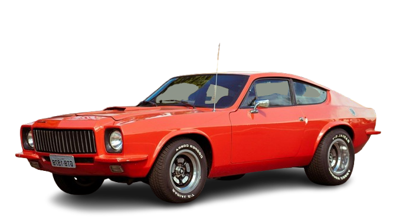

PUMA GTB
Com a imponência de um GT americano e a paixão da engenharia brasileira, o Puma GTB foi a besta elegante que rugia nas estradas, entregando força e exclusividade em um pacote de puro desempenho.

HISTÓRIA
Era hora da Puma ter um segundo modelo e a ideia era algo mais potente como um Muscle Car. Rino Malzoni então fez um primeiro protótipo em 1971, batizado de P-8, que utilizava todo o conjunto mecânico dianteiro do Opala 6 cilindros, mas com chassis feito com perfis de aço soldados.
O desenho do primeiro protótipo que herdou alguns detalhes estéticos do GT4R não empolgou e foi todo refeito para chegar até o desenho definitivo, sendo apresentado no Salão do Automóvel de 1972 o Puma GTO.
O nome, porém, não agradou a GM, alegando que o nome pertencia a um modelo da sua divisão Pontiac.
A Puma então alterou o nome para GTB que só chegou a ser comercializado em 1974. Além de algumas pequenas alterações estéticas na dianteira, a suspensão traseira passou a ser com feixe de molas, não mais como a do Opala.
Em 1976 o Puma GTB passou por algumas modificações como a grade dianteira com frisos verticais e no ano seguinte a lanterna traseira passou a ser a mesma do Alfa Romeo 2300 e não mais a do Saab Sonett.
FICHA TECNICA
Modelo: Pumo GTB
Ano: 1977
Motor: 4.1 gasolina
Potência: 140 cv
Torque: 29,3 kgfm
0–100 km/h: 12,4 s
Vel. Máx: 170 km/h
Peso: 1180 kg
Tração: Traseira
Câmbio: Manual 4 marchas
Dimensões (C×L×A): 4.300×1.740×1.285 mm
CURIOSIDADE
A maior curiosidade e o grande diferencial do Puma GTB (Gran Turismo Brasil) em relação aos outros Pumas (como o GTE) é que ele foi o único modelo da marca a utilizar uma mecânica de 6 cilindros em linha, derivada da Chevrolet Opala.
GALERIA
Imagens do Puma GTB
Canal: Renato Bellote